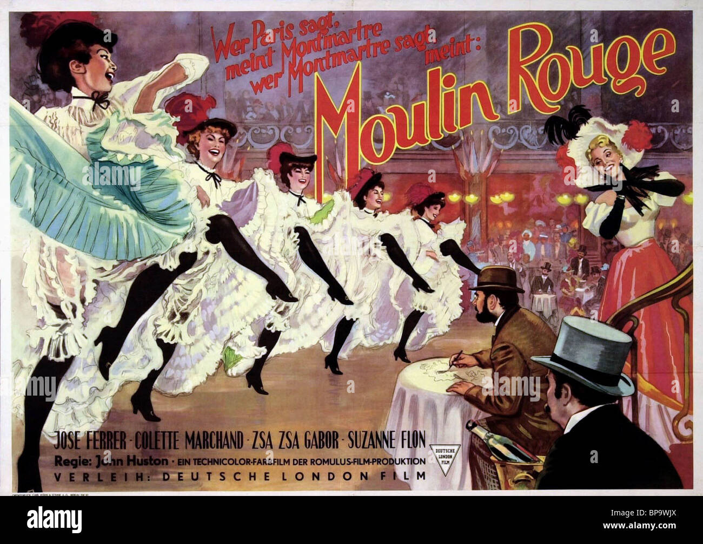
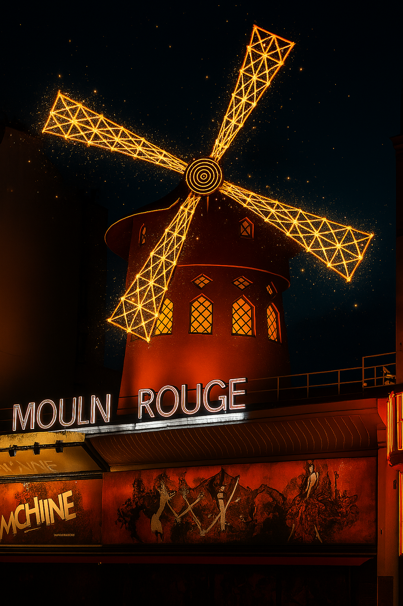

Donde las plumas vuelan, las luces bailan y los sueños giran como un molino mágico 💃🌟
🎡 ¿Qué es el Moulin Rouge? 🎡
¡Bienvenidos al cabaret más famoso del mundo! El Moulin Rouge (que significa “molino rojo”) es un teatro lleno de luces, lentejuelas y espectáculos increíbles. Está en el barrio de Pigalle, justo al pie de Montmartre, y desde hace más de 130 años hace que la gente aplauda, ría y se quede con la boca abierta 😮✨.
💃 El baile del cancán: ¡piernas al aire! 💃
¿Has oído hablar del cancán? Es un baile súper divertido donde las bailarinas levantan las piernas muy alto, giran sus faldas y hacen acrobacias al ritmo de la música. ¡Es como una fiesta de piernas voladoras! 🎶👯♀️
🎭 Un poco de historia con lentejuelas 🎭
El Moulin Rouge abrió en 1889, el mismo año que la Torre Eiffel. Desde entonces, ha sido el lugar favorito de artistas, cantantes y pintores como Toulouse-Lautrec, que dibujaba a las bailarinas con sus trajes brillantes. Aquí han actuado estrellas como Edith Piaf, Frank Sinatra y hasta Elton John 🎤🌈.
🕵️♂️ Misión: ¡Detectives del cabaret! 🕵️♀️
- 🔴 Busca el molino: ¿Puedes encontrar las aspas rojas girando sobre el tejado?
- 🎨 Dibuja tu propio traje de cancán: ¿Con plumas? ¿Con estrellas? ¡Tú decides!
- 📸 Foto creativa: Haz una pose de bailarín o bailarina delante del cartel iluminado.
🎟️ ¿Se puede entrar con niños?
El espectáculo principal es para adultos, pero ver el edificio por fuera es una experiencia mágica para todos. Las luces, los colores y el ambiente son como de película. ¡Y puedes contarles a los peques que aquí nació uno de los bailes más locos del mundo! 🎬🍿
🎨 Idea divertida para después
En casa, puedes montar tu propio teatro de Moulin Rouge con muñecos, luces de colores y música. ¡Y que empiece el show! 🎤🎭

